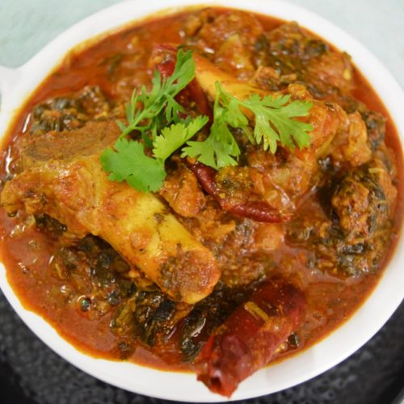

Ramen

About gongura mutton
Gongura Mutton, a deliciously finger licking recipe to treat your family and friends.
Ingredients
-
Mutton - 500 grams.
-
Turmeric powder - pinch.
-
Ginger garlic paste - 1 tablespoon.
-
Onion (chopped) - 1 number.
-
Oil - as required.
-
Salt - to taste.
-
Red chili powder - 1 tea spoon.
-
Coriander powder - 1 tea spoon.
-
Cumin powder - 1/2 tea spoon.
-
Green chilies (slited) - 5 numbers.
-
Sorrel leaves - 5 bunch.
-
Garam masala powder - 1 tea spoon.
-
Garam masala powder - 1 tea spoon.
-
Shahi jeera - 1 tea spoon.
-
Water - as required.
-
Cardamom - 2 numbers.
-
Cloves - 2 numbers.
-
Cinnamon stick - 1 small.
Steps:
-
Take mutton in a presure cooker, add cumin powder, coriander powder, red chilli powder, 1/2 cup of water, salt and mix well and cook it with closed lid till the mutton pieces are tender.
-
Now in a pan, add oil, whole garam masala spices along with shahi jeera, chopped onions, salt cook this till onions change colour to golden brown.
-
Now add ginger garlic paste and saute it till raw flavor is gone.
-
To it, even add turmeric powder, green chillies,sorrel leaves, mix well and cook it on a very slow flame till oil oozes out .
-
Then add cooked mutton along with the remaining water to the same pan and let it cook for 5 more minutes.
-
At last, add some water (if required) then add garam masala powder, coriander leaves and mix well.
Can serve with rice or roti